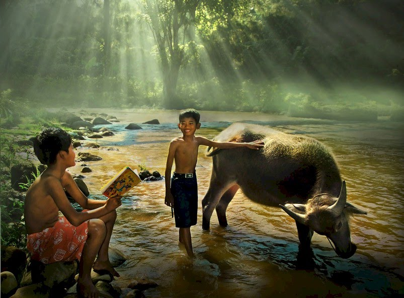
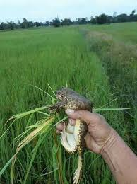

ต่อจากนี้เราจะนำท่านเข้าสู่ประวัติของอาหารอีสานว่ามีความเป็นมาอย่างไรมีสภาพแวดล้อมอย่างไรถึงได้มีเมนูแบบนี้ออกมา
ภาคอีสานนั้นมีพื้นที่ส่วนใหญ่เป็นที่ราบสูง ประกอบไปด้วย ทิวเขาน้อยใหญ่ เป็นพื้นที่โล่งกว้างทำให้เหมาะแก่การเลี้ยงสัตว์และทำการเกษตรแต่ภาคอีสานนั้นเป็นพื้นที่ ที่ค่อนข้างแล้งทำให้ผลผลิตที่ได้ไม่มากพอทั้งประชากรส่วนใหญ่ก็เป็นชาวนาทำให้อาหารอีสานส่วนใหญ่จะเป็นอาหารที่หาได้ตามท้องถิ่น เช่น กบ เขียด แย้ แมลงต่างๆ รวมทั้งผักในท้องถิ่น ปลา และสัตว์น้ำที่หาได้ตามห้วยหนองคลองบึง
เนื่องจากความแห้งแล้งจึงทำให้มีการถนอมอาหารเกิดขึ้นเช่น ปลาร้า หน่อไม้ดอง เป็นต้นเพื่อที่จะเก็บอาหารไว้กินได้เป็นเวลานานแต่ก็ใช้ว่าชาวนาจะไม่มีอาหารดีๆกินกันน่ะครับแต่แค่ในการล้มสัตว์ใหญ่เช่น วัว ควาย และ หมู ในแต่ล่ะครั้งต้องใช้วัตถุดิบให้คุ้มค่าที่สุดเพราะชาวนามีความผูกพันธ์กับสัตว์ในท้องถิ่นมายาวนานเพราะฉะนั้นการใช้วัตถุดิบให้คุ้มถือเป็นให้เกียรติแก่สัตว์ชนิดนั้นด้วย ไม่ว่า น้องวัวที่จะนำส่วนของรกวัวมาทำ หรือ ซุปหางวัวที่ทำจากหางวัว เป็นต้น
